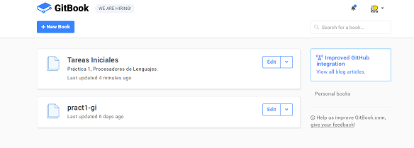
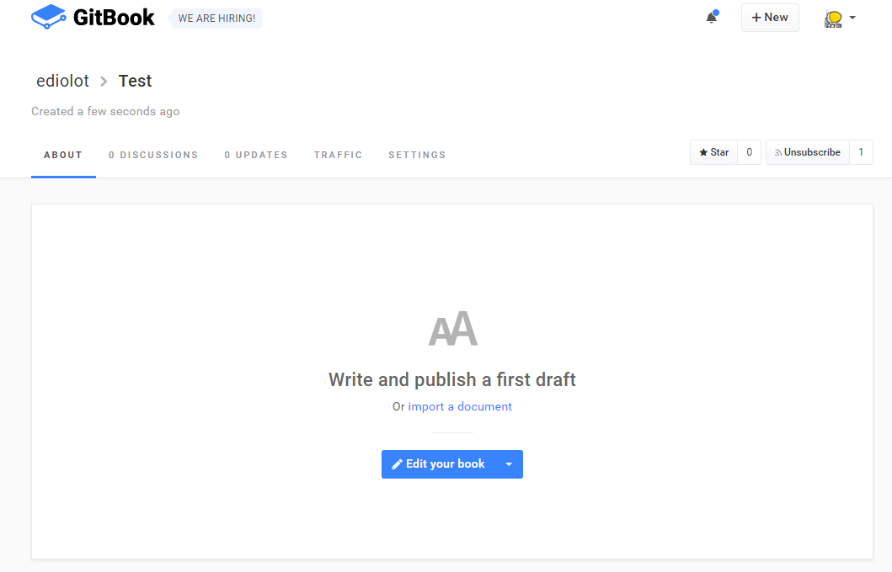
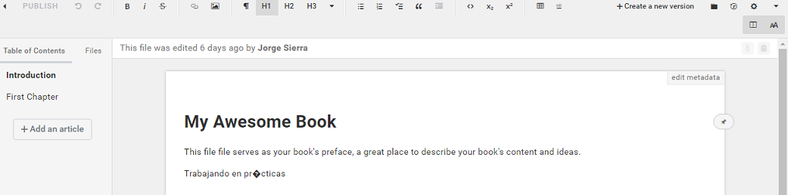
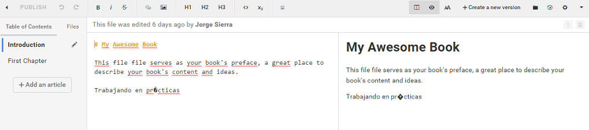
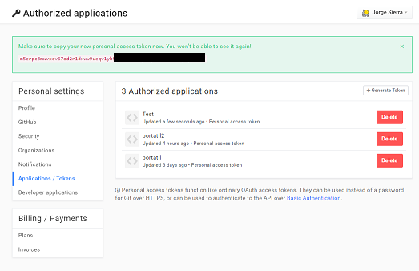

Gitbook
GitBook es una excelente herramienta para crear documentación en Markdown de proyectos y libros técnicos usando Markdown y Git (o GitHub). Permite incluir ejemplos y ejercicios interactivos (de momento, soporta solamente JavaScript) para posteriormente publicarlos de forma online via Github o cualquier otro hosting web.
Utilizando Markdown podemos maquetar los documentos y crearlos en distintos formatos como PDF, ebook o web. Uno de los objetivos de GitBook es poder crear documentación que sea fácilmente editable y abierta a contribuciones, por eso usando Git/Github podemos publicar nuestro libro técnico y manejar las colaboraciones de forma transparente.
Los libros en GitBook podrán ser publicados de forma pública gratuita o bajo una tasa de pago mensual existe la posibilidad de hacerlo de forma privada.
Si se encuentran problemas a la hora de utilizar los comandos push o pull del servidor, véase la sección de los tokens en GitBook.
La plataforma
Una vez creada la cuenta nueva o utilizando la ya existente en GitHub podremos entrar al dashboard principal donde veremos los libros que hemos creado como objeto central. Desde aquí podremos crear un libro nuevo con el botón superior.

Creación de un libro mediante la plataforma
A la hora de crear un libro nuevo podemos seleccionar varias opciones.
- Libro y Manual.
- Documentación API.
- Base de conocimiento.
- Importar documento.
- Importar desde GitHub.
- Importar desde un repositorio Git.
En nuestro caso seleccionaremos la opción de Libro y Manual. A continuación podemos declarar las opciones del libro y confirmar su creación donde pasaremos a la pantalla del libro.

En la interfaz se puede acceder a diferentes pestañas.
| Pestaña | Descripción |
|---|---|
| About | Pestaña principal. Muestra el Readme en el directorio raíz si existe. |
| Discussions | Permite crear discusiones sobre el proyecto. |
| Updates | Actualziaciones del libro, equivalente a los commits de Git |
| Traffic | Estadísticas de interés |
| Settings | Opciones del Gitbook, permite añadir colaboradores y sincronizar con GitHub entre otros |
Continuamos seleccionando la opción de editar y se nos dará acceso a la pantalla principal de edición donde podremos añadir capítulos y editarlos. Los cambios en Markdown se actualizarán solo visualmente mientras escribimos o podemos colocarnos en la vista compartida (En el menú superior derecho) para editar el Markdown y ver los cambios en una división del entorno de trabajo.


Los cambios serán publicados siempre que hagamos click en el botón superior izquierdo de publicar que estará disponible cada vez que se realicen cambios (O utilizando CTRL+S) y quedarán almacenados en la pestaña anteriormente mencionada de updates.
Aplicación de escritorio
La aplicación de escritorio también estará disponible para editar el libro sin necesidad de acceder de forma online.
GitBook Editor se encuentra disponible para Mac, Windows o Linux.
Creación de un libro mediante línea de comandos
Para la creación del libro, deberemos instalar el paquete gitbook-cli, lo instalaremos de forma global para que este permanentemente disponible.
npm install gitbook-cli -g
En este punto podemos decidir clonar uno de los repositorios existentes o recién creado y continuar desde ese punto.
git clone [url]
Podemos añadir ahora un remoto que hayamos creado en GitHub y hacer un push para subir los archivos y posteriormente publicarlo mediante las gh-pagesp.
git remote add [nombre] [url GitHub]
git push [nombre] master
Sin embargo, este proceso se puede automatizar, entre otras formas mediante la interfaz online de GitBook que se verá más adelante.
Desde aquí podemos actualizar el libro editando los archivos y haciendo commits como normalmente.
Se recomienda seguir la siguiente estructura de directorios en el repositorio del GitBook. Y mantener las imágenes y otros archivos en una carpeta denominada assets.
.
├── book.json
├── README.md
├── SUMMARY.md
├── chapter-1/
| ├── README.md
| └── something.md
└── chapter-2/
├── README.md
└── something.md
| Archivo | Description |
|---|---|
| book.json | Almacena datos de configuración (opcional) |
| README.md | Prefacio / Introducción al libro (requerido) |
| SUMMARY.md | Tabla de contenidos (opcional) |
| GLOSSARY.md | Lexico, lista de términos (opcional) |
Generar el libro
En este punto hemos generado el libro que podremos ver accediendo al repositorio en GitBook, pero también es posible (y necesario para el uso de GitHub pages) generar una página web (también es posible generar otro tipo de archivos). Existen dos formas de hacerlo:
gitbook build: Generará un directorio_bookque contendrá los archivos html del libro. Una vez publicada la rama gh-pages en GitHub, podemos eliminar todo el contenido extra en dicha rama y colocar los archivos de_bookdirectamente en la raiz.gitbook serve: Levantará un servidor al que podremos conectarnos para navegar rápidamente por el libro como si hubiéramos generado los archivos congitbook build.
El libro publicado además estará disponible en GitBook mediante un enlace del tipo:
https://<username>.gitbooks.io/<book-name>/content/
Tokens de GitBook
Para facilitar las autorizaciones y los repetidos inicios de sesión en GitBook, existe un sistema de tokens.
Podemos generar un token accediendo a la opciones de nuestra cuenta haciendo click en nuestra imagen de avatar en la esquina superior derecha y después en la sección de Tokens / Aplicaciones. Solo podemos acceder al token una vez.
Una vez tengamos el token, podemos cambiar los enlaces del repositorio local a la siguiente url para que no hayan problemas de autenticación.
https://<username>:<token>@git.gitbook...
